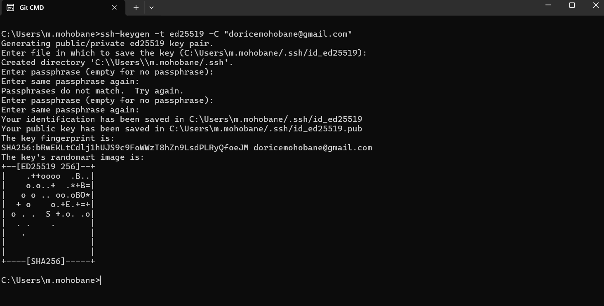
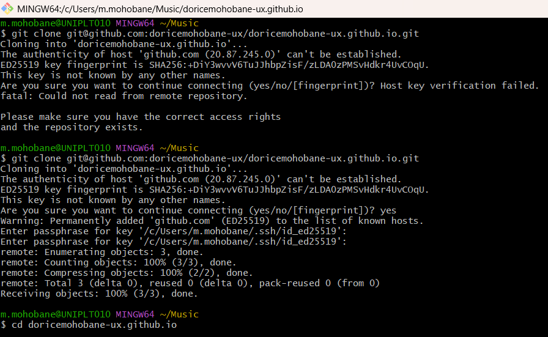
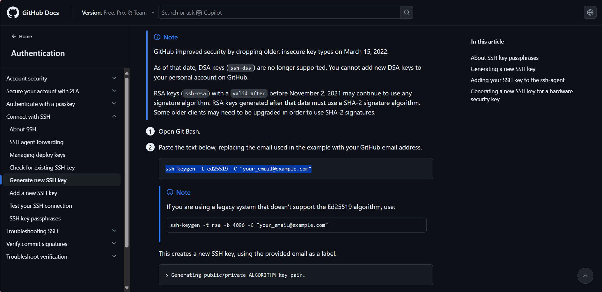
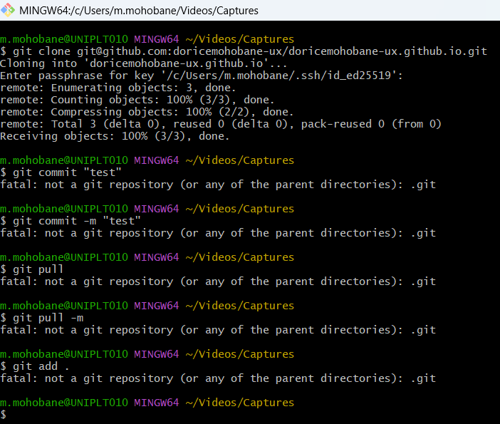
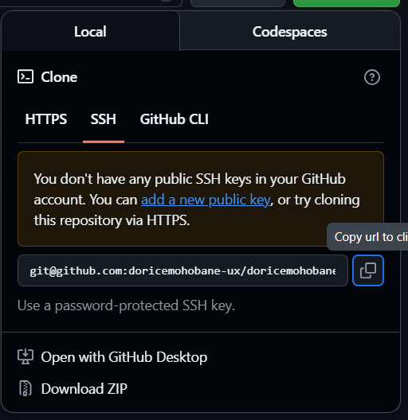

On This Page
Week 1: Practices
Date: From 23 September- To 30 September 2025
Quick Summary
- Skills Learned: Generating SSH keys, connecting GitHub with terminal, creating a new repository
- Digital Tools and Software Used: Git, Command Prompt, GitHub.com
- Topics: Version Control, Remote Repositories, SSH Authentication
- Key Concepts: SSH keys, GitHub Pages structure, Repository cloning
- Challenges Faced: Got an error saying I did not have any GitHub account connected when cloning via SSH
Introduction
Hey! I am Mamotsoko Mohobane, and this week was all about Setting Up Your Personal Website with GitHub Pages. I joined GitHub as doricemohobane-ux and started building my personal website using GitHub Pages. It was my first time working with SSH keys, so it was both exciting and confusing and I am still enjoyin the progress.
Process Documentation
- Opened Command Prompt and generated a new SSH key using
ssh-keygen -t ed25519 -C "doricemohobane@gmail.com" - Entered a passphrase 
- Started the SSH agent and added my SSH key to it
- Copied my public key and pasted it into GitHub under Settings - SSH and GPG Keys
- Tested the connection
- Downloaded git
- Downloaded visua studio
- Created a new repository called doricemohobane-ux.github.io
- Made it public and initialized with a README.
- While cloning it using SSH, but… messade popped up
- Ignoring it, I Cloned the repository to my local machine:git clone git@github.com:doricemohobane-ux/doricemohobane-ux.github.io.git 
- solved the error by generating new public key 
- cloned again, choosing different location to avoid confusion 
- Clicke the Fork button to copy the templates frome: https://github.com/Fablab-Rwanda/documentation-page
- Renamed forked repository Mamotsoko
- Opened the visual studio, opened the file and my cloned repository
- Edited it filling the information that will be shown on my website
- Seved the changes, commit and sync wive my GitHub


"you don't have any public SSH key in your GitHub account. you can add new public key or try cloning this repository via https."
Reflection
Setting up my GitHub account and website was both exciting and a bit challenging at first. I had never really worked with Git or SSH keys before, so each step felt like learning something completely new. I ran into some issues while trying to clone my repository through SSH, which taught me the importance of carefully reading error messages and troubleshooting calmly.
Despite the small setbacks, I am proud that I managed to generate an SSH key, link it to my GitHub, and start hosting my own repository. It gave me a better understanding of how developers collaborate and manage code online. I also learned how GitHub Pages can be used to host personal websites, which made me realize how powerful simple tools can be when you know how to use them.
Overall, this week gave me a strong foundation for version control and documentation. It boosted my confidence to keep experimenting and building more projects in the upcoming weeks.